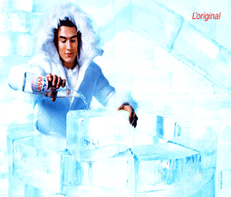
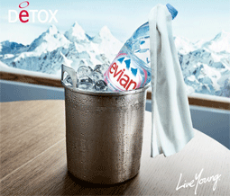

evian's Story.
1789년 신장 결석으로 인해 고통받던 레서트 차밍 프랑스 후작이 프랑스 레방의 에비앙 마을을 방문하게 됩니다. 그 뒤 Cachat 호수에서 정기적으로 물을 마신후 그의 병이 깨끗이 낳았습니다. 그 뒤 에비앙 마을의 이름을 따서 '에비앙'이라 알려진 것입니다.
evian's Line.
피곤에 지친 당신의 몸에 젊음을!
에비앙은 단 하나의 심플하고 현대적이며 우아한 디자인을 가진 병입니다. 이상적인 사이즈의 750ml (1.58pt) 보틀과 당신의 훌륭한 식사의 품격을 향상시키기 위한 330ml 사이즈의 미니 보틀까지 만나보시길 바랍니다.- 
evian's present.
에비앙은 국제적 스타를 포함 많은 팬들의 사랑을 받고있습니다.
호텔 및 bar와 같은 장소에서 젊은 층을 대상으로 하는 party event 등에 협찬을 하고 있으며, 영화에서의 제품 노출이나 , 주부 관련 강의, 대형 콘서트, 패션쇼 등에 협찬 하고 있습니다.- 